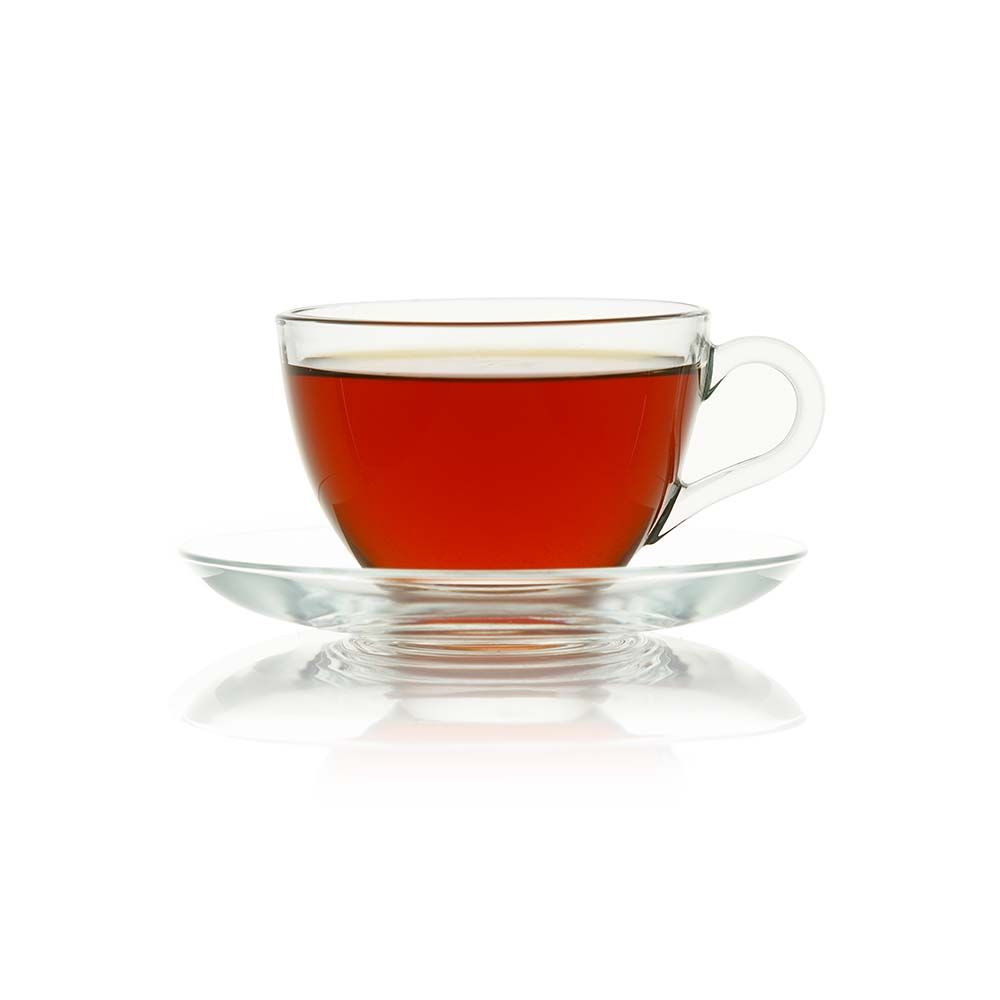
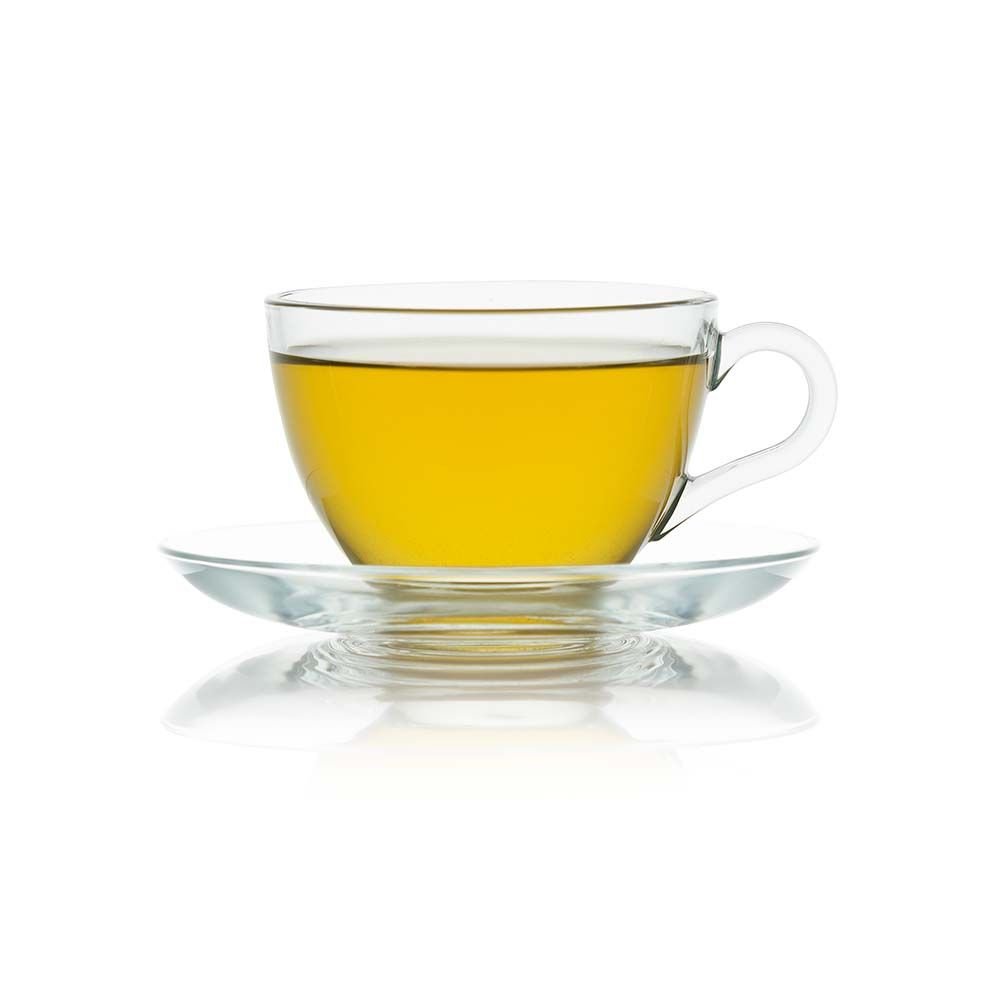
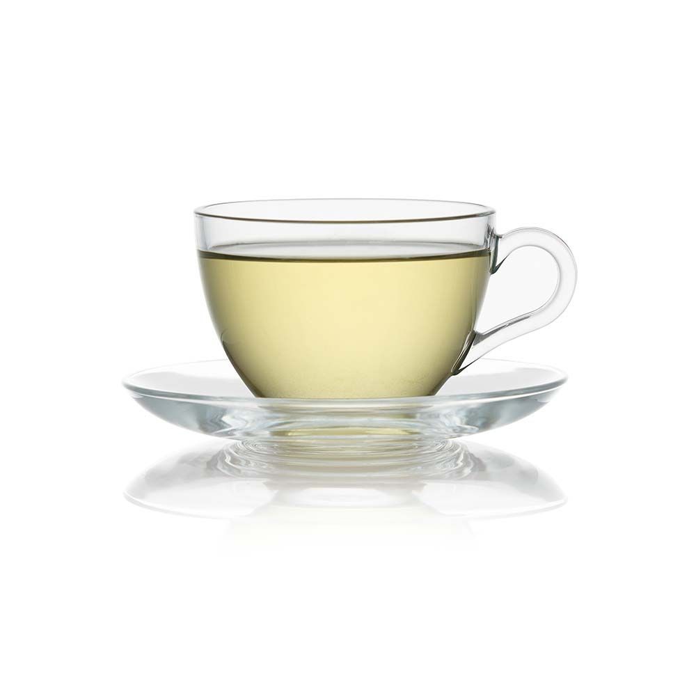

From the mist wrapped mountains of Nuwara Eliya that rise from the centre of the island to soar over 6000 feet above sea level, where the morning air is cool and bracing and the nights cold and touched with frost, come the lightest and the most refined tea to fill the connoisseurs’ cup. Nuwara Eliya is the champagne province of the country’s tea lands with flowery pekoes that are best imbibed light.

This region is twice blessed. It’s blessed during the months of June and September when the southwest monsoon arrives; a cold and dry spell to spur the tea bush to sprout the leaves that will produce a medium-bodied rosy tea graced with subtle character. Then it’s blessed again between November and January when the northeast monsoon’s yearly visitation brings rain in its wake and makes the tea darker in colour and stronger in flavour, adding more tang.

It is cool and dry between December and March and then the heavens open up to send in the rains between May and September. Two different climates within each year dictate Dimbula’s tea produce; a host of natural flavours with a hint of jasmine spiced with cypress. The tea when brewed displays a hue of a reddish, golden orange. And when tasted, it’s surprising to find a taste refreshingly mellow. Defined as ‘high grown’ tea, it is probably, the most famous Ceylon Tea of all.

It’s the climate that makes Uva tea highly prized. The mountainous terrain is exposed to both monsoon seasons; the annual northeast and the southwest monsoons. But when the winds reach these climes and howl around its high towers, they blow bereft of moisture – a spent force which had discharged its water content in the hills below. The dryness gives Uva tea a special concentrated aroma and a distinct exotic flavour.

This mid country tea grown at 2,000 to 4,000 feet above sea level produces robust, full-bodied teas. Ideal for those who love their tea strong, bursting with flavour: the perfect wake-up tea for winter mornings, or when the heart needs a perky sprint.

It’s not only in the mountains that Ceylon Tea brews best. The region of Sabaragamuwa, geographically placed at a lower elevation, musters a tea that is second to none. The climate which is hot and humid in the open air and moist and cool where the surrounding foliage is dense, serve to produce a dry tea leaf of a dark reddish black hue. The result: a scarlet coloured, full-bodied strong tea in your morning tea cup.
| Tea Types | Plantations | Description | Image |
|---|---|---|---|
| Black Tea |
|
Black tea is the most common kind of tea. Ceylon black tea is considered the cleanest tea in the world, free of harmful pesticides or additives. To make black tea, the leaves are hand plucked by the masterful female tea pluckers. They pick only two leaves and a bud in large quantities, which are then withered, rolled and fermented, then dried and sifted. |  |
| Green Tea |
|
Ceylon green tea is quickly gaining traction outside of Sri Lanka.The leaves are unfermented, maintaining their antioxidant attributes. The leaves are picked, withered and heated, then rolled before drying and sifting.Ceylon green tea is pure and clean, just like the black tea. |  |
| White Tea |
|
White tea is the most unique tea in Sri Lanka. It’s the also the most expensive, due to how it is harvested. For white tea, only the buds are plucked, and very delicately at dawn. The buds are not fermented at all and are hand rolled individually. White tea is the only tea that is totally handmade. The color of white tea is subtle and light. There is less caffeine and more antioxidants than in green or black tea, making white tea one of the most healthy. |  |